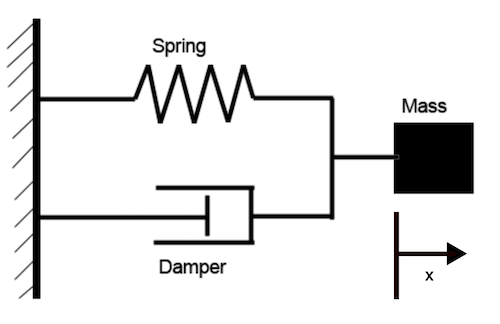

Modeling Dynamic Systems with Dymos¶
Things you'll learn through this example
- How to define a basic Dymos ODE system.
- How to explictly propagate the system from some initial state.
Dymos is a library for modeling dynamic systems and performing optimal control with the OpenMDAO framework. Dynamic systems are typically defined by some set of ordinary differential equations (the ODE) which governs their behavior.
Consider a simple damped harmonic oscillator.

Converting this to a first order system results in an ODE system with two states:
The OpenMDAO model of the ODE¶
In Dymos, the ODE is an OpenMDAO System (a Component, or a Group of components). The following ExplicitComponent computes the velocity rate for the damped harmonic oscillator.
More detail on the workings of an ExplicitComponent can be found in the OpenMDAO documentation. In summary, an ExplicitComponent used as part of an ODE in Dymos should override the following methods:
- initialize: Called at setup, and used to define options for the component. ALL Dymos ODE components should have the property
num_nodes, which defines the number of points at which the outputs are simultaneously computed. - setup: Used to add inputs and outputs to the component, and declare which outputs (and indices of outputs) are dependent on each of the inputs.
- compute: Used to compute the outputs, given the inputs.
- compute_partials: Used to compute the derivatives of the outputs w.r.t. each of the inputs analytically. This method may be omitted if finite difference or complex-step approximations are used, though analytic is recommended.
1 2 3 4 5 6 7 8 9 10 11 12 13 14 15 16 17 18 19 20 21 22 23 24 25 26 27 28 29 30 31 32 33 34 35 36 37 38 | |
Things to note about the ODE system
- In this case, the ODE is a function of both states, but this isn't always the case. If the dynamics aren't functions of some states, those states aren't needed as inputs.
- This ODE only computes the rate of change of velocity. Since the rate of change of displacement can directly be obtained from another state variable, it doesn't need to be computed by the ODE. This would also be true if the state's rate was a control, design parameter, or input parameter value.
- It's possible that we might want to use parameters
c,k, andmas design variables at some point, so they're also included as inputs here. Alternatively, if we had no interest in ever treating them as design variables, we could add their values as options to the ODE system in theinitializemethod.
Hello World: Propagating the dynamics¶
One of the first things one might be interested in regarding an ODE is propagating it from some given initial conditions. This is known as solving the initial value problem (IVP), and there are many software packages that can do this. The following is a minimal script that starts the system at some set of initial conditions and propagates them for some fixed duration. Some elements of this code will be explained later, but we'll hit the highlights now.
import openmdao.api as om
import dymos as dm
import matplotlib.pyplot as plt
plt.switch_backend('Agg') # disable plotting to the screen
from dymos.examples.oscillator.doc.oscillator_ode import OscillatorODE
# Instantiate an OpenMDAO Problem instance.
prob = om.Problem()
# Instantiate a Dymos Trajectory and add it to the Problem model.
traj = dm.Trajectory()
prob.model.add_subsystem('traj', traj)
# Instantiate a Phase and add it to the Trajectory.
# Here the transcription is necessary but not particularly relevant.
phase = dm.Phase(ode_class=OscillatorODE, transcription=dm.Radau(num_segments=4))
traj.add_phase('phase0', phase)
# Tell Dymos the states to be propagated using the given ODE.
phase.add_state('x', rate_source='v', targets=['x'], units='m')
phase.add_state('v', rate_source='v_dot', targets=['v'], units='m/s')
# The spring constant, damping coefficient, and mass are inputs to the system
# that are constant throughout the phase.
phase.add_parameter('k', units='N/m', targets=['k'])
phase.add_parameter('c', units='N*s/m', targets=['c'])
phase.add_parameter('m', units='kg', targets=['m'])
# Setup the OpenMDAO problem
prob.setup()
# Assign values to the times and states
prob.set_val('traj.phase0.t_initial', 0.0)
prob.set_val('traj.phase0.t_duration', 15.0)
prob.set_val('traj.phase0.states:x', 10.0)
prob.set_val('traj.phase0.states:v', 0.0)
prob.set_val('traj.phase0.parameters:k', 1.0)
prob.set_val('traj.phase0.parameters:c', 0.5)
prob.set_val('traj.phase0.parameters:m', 1.0)
# Perform a single execution of the model (executing the model is required before simulation).
prob.run_model()
# Perform an explicit simulation of our ODE from the initial conditions.
sim_out = traj.simulate(times_per_seg=50)
# Plot the state values obtained from the phase timeseries objects in the simulation output.
t_sol = prob.get_val('traj.phase0.timeseries.time')
t_sim = sim_out.get_val('traj.phase0.timeseries.time')
states = ['x', 'v']
fig, axes = plt.subplots(len(states), 1)
for i, state in enumerate(states):
sol = axes[i].plot(t_sol, prob.get_val(f'traj.phase0.timeseries.states:{state}'), 'o')
sim = axes[i].plot(t_sim, sim_out.get_val(f'traj.phase0.timeseries.states:{state}'), '-')
axes[i].set_ylabel(state)
axes[-1].set_xlabel('time (s)')
fig.legend((sol[0], sim[0]), ('solution', 'simulation'), 'lower right', ncol=2)
plt.tight_layout()
plt.show()
Simulating trajectory traj
Done simulating trajectory traj
What happened?¶
This script consists of the following general steps:
- After importing relevant packages, an OpenMDAO Problem is instantiated
- A Dymos Trajectory object is instantiated, and a single Phase named
'phase0'is added to it. - That Phase takes the ODE class as one of its arguments. It will instantiate instances of it as needed.
- The transcription determines how the implicit integration and optimization are performed. It's necessary but not particularly relevant in this example.
- The states to be integrated are added to the phase.
- Each state needs a rate source - an ODE-relative path of the output which provides the time derivative of the state variable.
For the rate_source of
x, we providev. Dymos understands this is the name of one of the other states (or time, or controls, or parameters). - Those states which are inputs to the ODE need to provide their targets in the ODE (again, with an ODE-relative path).
- The problem is setup (this prepares the model for execution in OpenMDAO).
- Default values are assigned to the states and time.
- Variables
t_initialandt_duration(the initial time and duration of the Phase) are scalars. - State variables are vectors whose values are provided throughout the Phase. Here they're all being filled with a single value (10.0 for displacement, 0.0 for the velocity)
Problem.run_modelis called. This executes the Problem'smodelone time. This is a necessary step before using theTrajectory.simulatemethod.- The trajectory is simulated using the
simulate()method and the results returned as an OpenMDAO Problem instance calledsim_out. - The states are plotted using values obtained from the timeseries. Phases contain
_timeseries_data that provides contiguous values regardless of the transcription used.
Method simulate exists on both Trajectory and Phase objects.
It uses the scipy.integrate.solve_ivp function to propagate the states defined in each phase of the trajectory from their initial values at the initial time to some final value at time = t_initial + t_duration.
In Dymos, the simulate method is useful for testing the functionality of an ODE (making sure it behaves as expected) and for checking the validity of answers after optimization.
However, it cannot solve boundary value problems.
Why is the solution different from the simulation results?¶
The plots above display both the solution from the implicit transcription (blue dots) and the results of the simulation (orange line). Here they do not match because we only performed a single execution of the model. The purpose of a model execution in Dymos is to calculate the objective and constraints for the optimizer. These constraints include the collocation defect constraints, which (when driven to zero) indicate that the current polynomial representation of the state-time history matches the physically correct trajectory. In this case, no iteration was performed, and thus the solution is not physically valid.
To be clear, the output of Dymos in this case is not a physcially valid trajectory.
The simulate() call after executing the model is the expected result using the variable step integrator from Scipy.
There are two ways to converge this solution using the implicit transcription techniques in Dymos. 1. We can run an optimization driver with some "dummy" objective to converge the collocation defect constraints. 2. We can have Dymos use a nonlinear solver to vary the state time-history until the colloction defect constraints are satisfied.
Traditionally, many collocation optimal control techniques have use an optimizer-based approach because it is extremely efficient. OpenMDAO provides a lot of versatility in adding in nonlinear solvers within the optimization problem. In our case, using a solver to converge state-time history means that the optimizer "sees" a physical trajectory at every iteration. In an optimization context, we can use the solver-based convergence of defects to obtain a shooting method with analytic derivatives.
Using a solver to converge the physical trajectory¶
We let Dymos know that one or more states should be converged using the solve_segments=True argument.
If passed to the transcription, it applies to all states.
Otherwise, we can pass it only to certain states as an argument to add_state or set_state_options.
import openmdao.api as om
import dymos as dm
import matplotlib.pyplot as plt
plt.switch_backend('Agg') # disable plotting to the screen
from dymos.examples.oscillator.doc.oscillator_ode import OscillatorODE
# Instantiate an OpenMDAO Problem instance.
prob = om.Problem()
# Instantiate a Dymos Trajectory and add it to the Problem model.
traj = dm.Trajectory()
prob.model.add_subsystem('traj', traj)
# Instantiate a Phase and add it to the Trajectory.
phase = dm.Phase(ode_class=OscillatorODE, transcription=dm.Radau(num_segments=4, solve_segments=True))
traj.add_phase('phase0', phase)
# Tell Dymos the states to be propagated using the given ODE.
phase.add_state('x', fix_initial=True, rate_source='v', targets=['x'], units='m')
phase.add_state('v', fix_initial=True, rate_source='v_dot', targets=['v'], units='m/s')
# The spring constant, damping coefficient, and mass are inputs to the system that are
# constant throughout the phase.
phase.add_parameter('k', units='N/m', targets=['k'])
phase.add_parameter('c', units='N*s/m', targets=['c'])
phase.add_parameter('m', units='kg', targets=['m'])
# Setup the OpenMDAO problem
prob.setup()
# Assign values to the times and states
prob.set_val('traj.phase0.t_initial', 0.0)
prob.set_val('traj.phase0.t_duration', 15.0)
prob.set_val('traj.phase0.states:x', 10.0)
prob.set_val('traj.phase0.states:v', 0.0)
prob.set_val('traj.phase0.parameters:k', 1.0)
prob.set_val('traj.phase0.parameters:c', 0.5)
prob.set_val('traj.phase0.parameters:m', 1.0)
# Now we're using the optimization driver to iteratively run the model and vary the
# phase duration until the final y value is 0.
prob.run_model()
# Perform an explicit simulation of our ODE from the initial conditions.
sim_out = traj.simulate(times_per_seg=50)
# Plot the state values obtained from the phase timeseries objects in the simulation output.
t_sol = prob.get_val('traj.phase0.timeseries.time')
t_sim = sim_out.get_val('traj.phase0.timeseries.time')
states = ['x', 'v']
fig, axes = plt.subplots(len(states), 1)
for i, state in enumerate(states):
sol = axes[i].plot(t_sol, prob.get_val(f'traj.phase0.timeseries.states:{state}'), 'o')
sim = axes[i].plot(t_sim, sim_out.get_val(f'traj.phase0.timeseries.states:{state}'), '-')
axes[i].set_ylabel(state)
axes[-1].set_xlabel('time (s)')
fig.legend((sol[0], sim[0]), ('solution', 'simulation'), 'lower right', ncol=2)
plt.tight_layout()
plt.show()
Simulating trajectory traj
Done simulating trajectory traj
Using an optimization driver to converge the physical trajectory¶
Alternatively, we can use an optimization driver to converge the state time histories.
In the case of an initial value problem (fixed time duration, fixed initial states, and no controls or parameters as design variables) there are no degrees of freedom to optimize the problem, just single possible trajectory which satisfies the collocation constraints.
In OpenMDAO (and thus Dymos) optimizers require an objective. Even though the initial time and duration of the phase are fixed, we provide the final time as a "dummy" objective here.
import openmdao.api as om
import dymos as dm
import matplotlib.pyplot as plt
plt.switch_backend('Agg') # disable plotting to the screen
from dymos.examples.oscillator.doc.oscillator_ode import OscillatorODE
# Instantiate an OpenMDAO Problem instance.
prob = om.Problem()
# We need an optimization driver. To solve this simple problem ScipyOptimizerDriver will work.
prob.driver = om.ScipyOptimizeDriver()
# Instantiate a Dymos Trajectory and add it to the Problem model.
traj = dm.Trajectory()
prob.model.add_subsystem('traj', traj)
# Instantiate a Phase and add it to the Trajectory.
phase = dm.Phase(ode_class=OscillatorODE, transcription=dm.Radau(num_segments=4))
traj.add_phase('phase0', phase)
# Tell Dymos that the duration of the phase is bounded.
phase.set_time_options(fix_initial=True, fix_duration=True)
# Tell Dymos the states to be propagated using the given ODE.
phase.add_state('x', fix_initial=True, rate_source='v', targets=['x'], units='m')
phase.add_state('v', fix_initial=True, rate_source='v_dot', targets=['v'], units='m/s')
# The spring constant, damping coefficient, and mass are inputs to the system that are
# constant throughout the phase.
phase.add_parameter('k', units='N/m', targets=['k'])
phase.add_parameter('c', units='N*s/m', targets=['c'])
phase.add_parameter('m', units='kg', targets=['m'])
# Since we're using an optimization driver, an objective is required. We'll minimize
# the final time in this case.
phase.add_objective('time', loc='final')
# Setup the OpenMDAO problem
prob.setup()
# Assign values to the times and states
prob.set_val('traj.phase0.t_initial', 0.0)
prob.set_val('traj.phase0.t_duration', 15.0)
prob.set_val('traj.phase0.states:x', 10.0)
prob.set_val('traj.phase0.states:v', 0.0)
prob.set_val('traj.phase0.parameters:k', 1.0)
prob.set_val('traj.phase0.parameters:c', 0.5)
prob.set_val('traj.phase0.parameters:m', 1.0)
# Now we're using the optimization driver to iteratively run the model and vary the
# phase duration until the final y value is 0.
prob.run_driver()
# Perform an explicit simulation of our ODE from the initial conditions.
sim_out = traj.simulate(times_per_seg=50)
# Plot the state values obtained from the phase timeseries objects in the simulation output.
t_sol = prob.get_val('traj.phase0.timeseries.time')
t_sim = sim_out.get_val('traj.phase0.timeseries.time')
states = ['x', 'v']
fig, axes = plt.subplots(len(states), 1)
for i, state in enumerate(states):
sol = axes[i].plot(t_sol, prob.get_val(f'traj.phase0.timeseries.states:{state}'), 'o')
sim = axes[i].plot(t_sim, sim_out.get_val(f'traj.phase0.timeseries.states:{state}'), '-')
axes[i].set_ylabel(state)
axes[-1].set_xlabel('time (s)')
fig.legend((sol[0], sim[0]), ('solution', 'simulation'), 'lower right', ncol=2)
plt.tight_layout()
plt.show()
Optimization terminated successfully. (Exit mode 0)
Current function value: 15.0
Iterations: 1
Function evaluations: 2
Gradient evaluations: 1
Optimization Complete
-----------------------------------
Simulating trajectory traj
Done simulating trajectory traj
But the solution still doesn't match the simulation¶
If you look at the plots from the last two examples, you'll notice that the state time-history from the solution has some pretty significant deviations from the simulation results. This is an important lesson in using implicit collocation techniques.
A converged trajectory isn't necessarily correct
As we mentioned before, the simulate() method exists to provide a check on a converged trajectory.
In this case, the trajectory found using simulate() doesn't really interpolate the solution from the collocation technique.
In the next section, we'll explain how to deal with this.